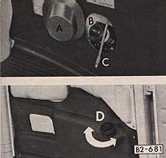

| M-code | description | |
| 288 | Headlamp Washers | |
| available on model | remarks | |
| 211 - 274 | Headlamp washers were available from modelyear 1974 on that's from VIN 2x4 2000 001 and up |
|  | Top: Without headlamp washers the windscreen washer works on air pressure Bottom: Vehicles with headlamp washers are equiped with an electric fluid pump for both the headlamp washers and the windscreen washers |